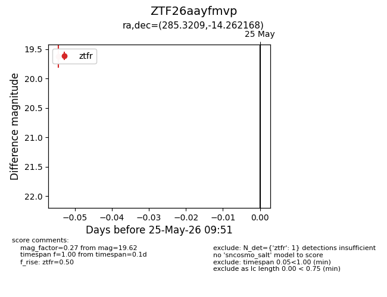
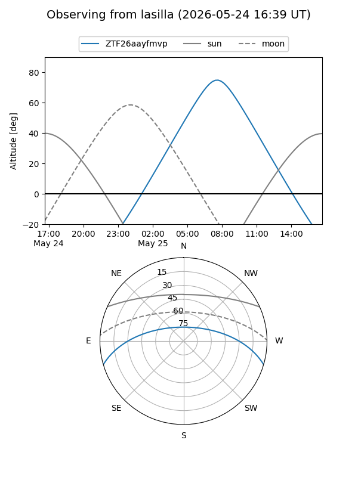
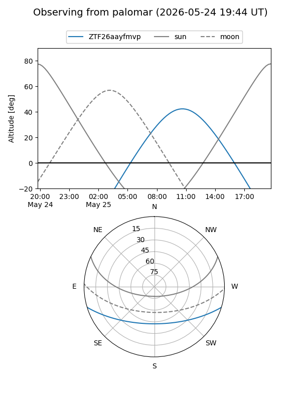

ZTF26aayfmvp
Target ZTF26aayfmvp at 2026-05-25 09:52
Aliases and brokers:
lsst-FINK: link
lsst-Lasair: link
lsst-ALeRCE: link
ztf-FINK: link
ztf-Lasair: link
ztf-ALeRCE: link
alt names
ZTF26aayfmvp (ztf,fink_ztf)
Coordinates:
equatorial (ra, dec) = 285.3209,-14.26217
equatorial (HMS+DMS) = 19:01:17.01,-14:15:43.80
galactic (l, b) = (21.2458,-8.59097)
Flags:
Photometry:
last ztfr=19.62
1 ztfr detections
Lightcurve

Visibility


Additional plots